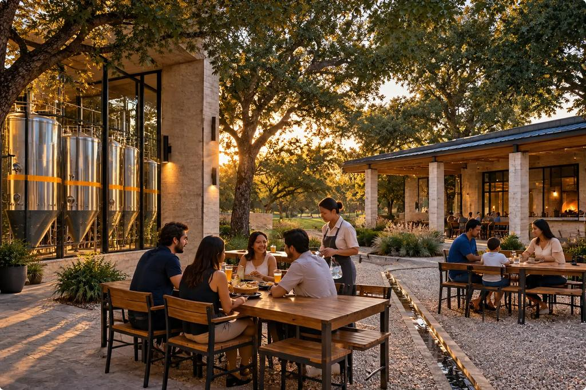

One evening · Vision scenario
An evening at NASHA.
What it could feel like, from the first glass to the last plate.
VISION SCENARIO. It tells you how the evening is designed to feel. It invents no sales, guest counts, staff numbers or revenue, and nothing here has happened.
How to read this site
- Vision
- What NASHA could become. Most of this site.
- Prototype
- What the founder has physically made. Nothing yet.
- Validated
- What has passed a test we defined in advance. Nothing yet.
The vision is a design to aim at. The business view says what is real, what is assumed and what still needs proof.
The evening, hour by hour
Doors open
Low sun across the court. A cook lights the oven. A brewer checks a tank. The first glasses come off the shelf.
The early table
Families arrive. A child has a cup of juice while the grown-ups share a tray of Chicken 65 Totopos. Children's drinks stay clearly apart from the beer.
The court fills
Friends at the long table. Gold light on the limestone. Someone asks about the birria and the server says the consomme comes in a small cup.
The pairing hour
Hefeweizen beside the birria. A lager beside the totopos. A couple compares a bite with a sip, and laughs. The tanks begin to glow.
Social energy
The arcade is warm brass. A solo guest at the bar watches the brew deck. Busy, but you can still talk.
Late dinner and the bar
The court quiets to small groups. A final plate of quesadilla wedges. The oven mouth glows. A brewer wipes down a valve.
Day to night
The same place, changing.

Golden hour
Limestone, natural light, greenery. The court is cool and quiet; the kitchen is prepping. By golden hour the low sun rakes across the court and the steel screens throw soft patterns.

Night
Brass-warm light and the brewery glowing through glass. Social energy, never nightclub lighting. In rain, the arcades become a dry ring around a dark, wet court.
Through the seasons.
- Summer. Shade, fans, cold glasses and water. Zero-proof coolers lead.
- Winter. Closed-in warmth, braise and consomme, malt-forward beers, the oven mouth glowing in the north arcade.
See also the Court Brewhouse and the craft.